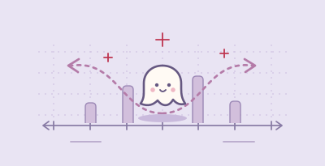
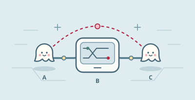

COLLECTION 01 · QUANTUM COMPUTING
Ghosts and Gates
Catch a photon, flip a signed coin, and explore spooky boards, quantum search, and error correction.
Explore five game familiesTHE QUANTUM PLAYGROUND
Catch a photon. Outsmart a ghost.
Get curious about the quantum world, one move at a time.
SIX COLLECTIONS. MORE WAYS TO GET CURIOUS.
COLLECTION 01 · QUANTUM COMPUTING
Catch a photon, flip a signed coin, and explore spooky boards, quantum search, and error correction.
Explore five game familiesCOLLECTION 02 · QUANTUM COMMUNICATION
Send a secret. Look for a listener. Start with Ghost Mail, made for solo play or sharing a phone.
Enter Spooky Signals Play Ghost Mail →COLLECTION 03 · INTERACTIVE UTILITIES
Explore gates on a Bloch sphere. Predict how complex numbers slide, turn, and grow in Ghost Numbers.
Enter Spooky Utilities Explore Bloch Sphere →COLLECTION 04 · A SHORT CLASSROOM WOW
Plan together, then go quiet. Start with three ghosts in Ghost Trio, then explore coordination and chance in Ghost Twins.
Enter Spooky ActionCOLLECTION 05 · QUANTUM MATERIALS
Twist two dot lattices, predict the spacing of the moiré pattern, and explore what that geometry tells us about twisted graphene. Includes a college lab activity.
Play Magic TwistCOLLECTION 06 · COLLEGE LABS
Find a low-energy state, steer a quantum walker, and test ideas about copying, networks, and entanglement.
Explore seven browser labsFind a concept, then pick a game that puts it to work.
29 concepts 19 games and activities
With a normalized state, square the magnitude of a basis outcome’s amplitude to find its probability.

Quantum DriftAdd the squared left and right amplitudes at each position.A quantum state can combine several basis states with amplitudes.
The basis specifies which set of outcomes a measurement can distinguish.
A measurement produces an outcome and can change the state used to predict what comes next.
Relative phase can change what happens when amplitudes combine.
A point on the sphere represents a pure state of one qubit.
Gates transform amplitudes in a controlled way.
Amplitudes add when they contribute to the same outcome.
Alternating a marking operation and a reflection amplifies the target.
A coin operation mixes directions, then each direction shifts the walker.
Count how many times an algorithm calls a hidden function.
Tune a circuit’s parameters to lower its expected energy.
An entangled pure state cannot be factored into states of its parts.

Ghost SwitchboardJoin two link pairs into a shared endpoint pair.With equally likely questions, shared entanglement can raise the win rate above the classical 3-in-4 bound.
Three entangled qubits can satisfy a set of parity rules no fixed classical plan can satisfy.
Classical plans can satisfy eight of nine intersections. The ideal entangled strategy can satisfy all nine.
Entanglement alone cannot transmit a chosen message.
Preparing and measuring in two bases lets a sample reveal disturbances.
A shared pair, a joint measurement and two classical bits transfer a qubit state.
A joint measurement at a relay entangles the two distant endpoints.
No single operation can perfectly copy every unknown quantum state.
A network can flag a lost link or state. Classical records can be copied and resent.
X swaps the computational basis states. Z reverses their relative sign.
Compare parts of an encoded state to learn about an error without reading the stored bit.
An estimate from finitely many measurements varies from batch to batch.
Recording which path or direction was taken can remove interference between those alternatives.
Twisting two repeating lattices makes a new pattern with a larger period.
Near a particular twist angle, graphene layers can show unusual electronic behavior, including superconductivity under specific conditions.
A Hamiltonian specifies the energy of a system and its interactions.
COLLECTION 01 · PICK A QUESTION. PLAY WITH THE ANSWER.
Five ways in. Plenty of “wait, what?” moments.
Start anywhere—or try Ghost Coin first.
Try Ghost Coin solo → Two choices. Can you make HEADS certain?
 Browser + tabletop01
Browser + tabletop01
Interference
Can you make light disappear?
Play a wave. Brighten your detector. Cancel your opponent’s. Then see who catches the photon.
 Browser + tabletop02
Browser + tabletop02
Interference
Can a quantum coin beat you?
Turn a penny flip into a battle of hidden signs. Discover a winning trick—and the counter-trick.
 Browser + tabletop03
Browser + tabletop03
Superposition
What if your move had two homes?
A familiar tic-tac-toe board gets spooky: paired marks, shared squares, and a chain of surprising collapses.
 Browser + tabletop04
Browser + tabletop04
Quantum search
Which room is hiding the ghost?
Flip a sign. Reflect around the average. Build up a search wave—and learn when to stop.
 Browser + tabletop05
Browser + tabletop05
Error correction
Can you fix a secret without looking?
The Gremlin brings the noise. The Guardian checks for mistakes. Protect the ghost without revealing it.
Every game has a facilitator guide. Browser games also work offline when downloaded.
LESS PREP. MORE “AHA!”
You don’t need to be a quantum expert to start a good conversation. Bring a question, let students make a prediction, and see what happens next.
Get the Ghosts and Gates kitZIP · Ghosts and Gates games, guides, and printables
Try Ghost Coin for signed chips, Catch the Photon for waves, or Ghost Grid for a familiar board with unfamiliar moves.
Share a screen, project a game for the class, or print a tabletop kit. Each guide lists materials, timing, and setup.
What did you predict? What changed? Which part of the game models quantum behavior—and where does the analogy end?
These games connect quantum concepts to cards, coins, coordinates, and familiar arithmetic. Some use quantum calculations; others are teaching metaphors. The guides help you explain both the connection and its limits.
Ghost Grid draws on Allan Goff’s quantum tic-tac-toe. Original credits are included with the games and guides.